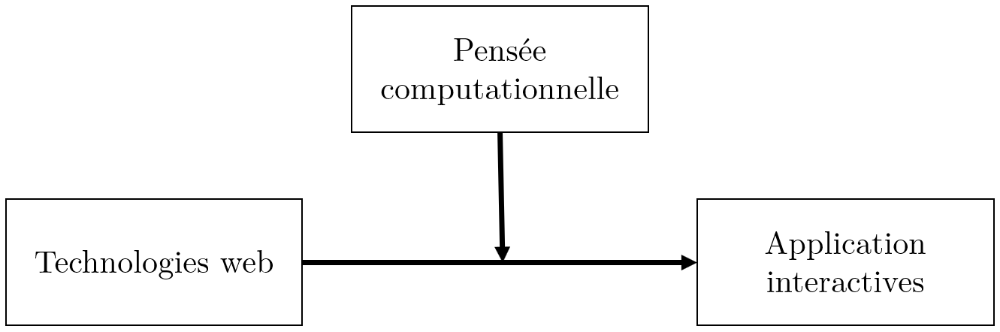
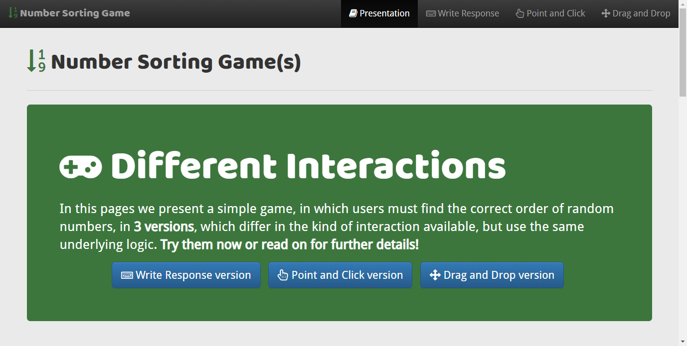
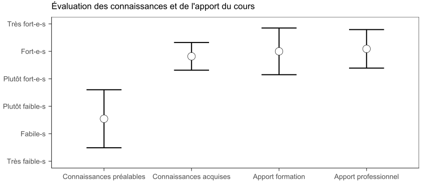
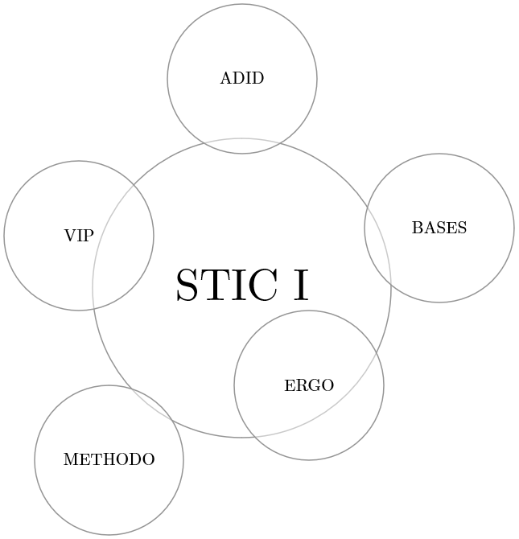
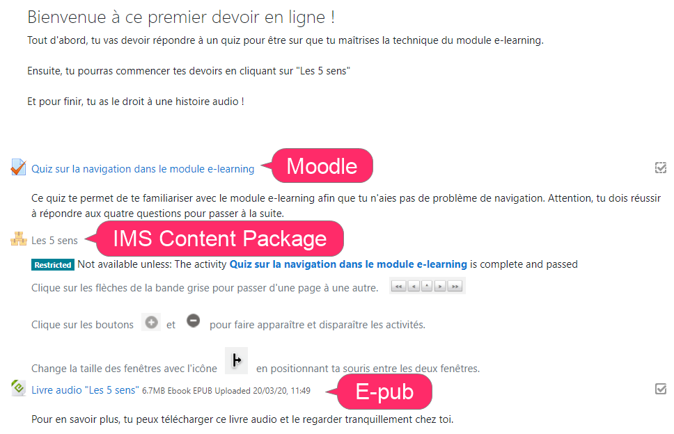
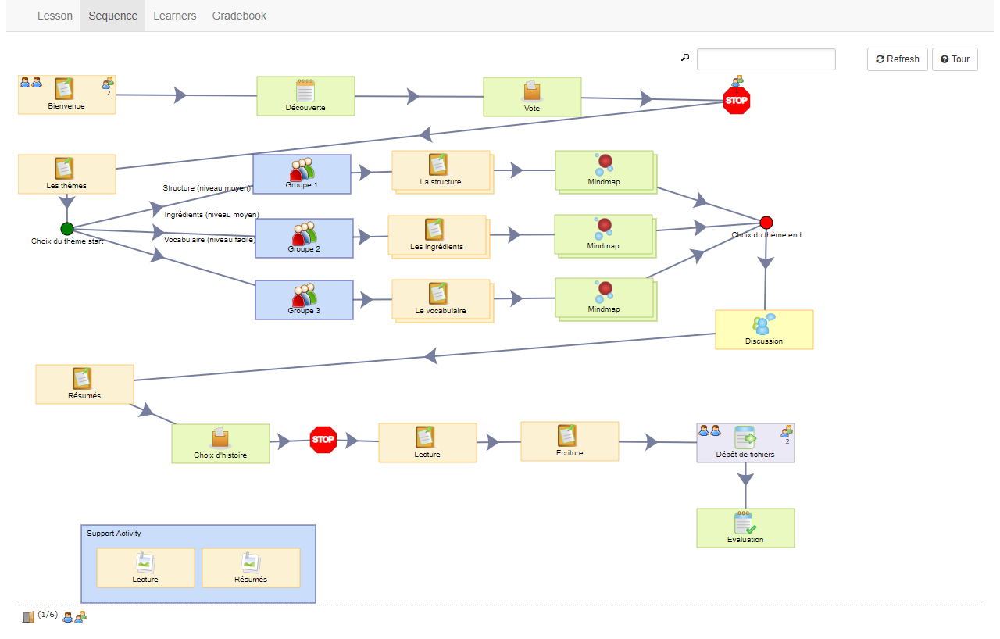
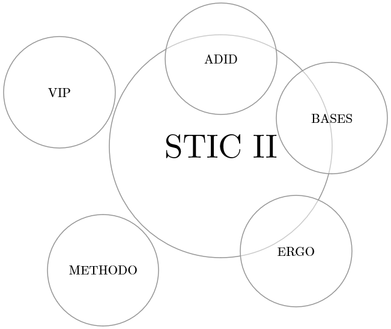
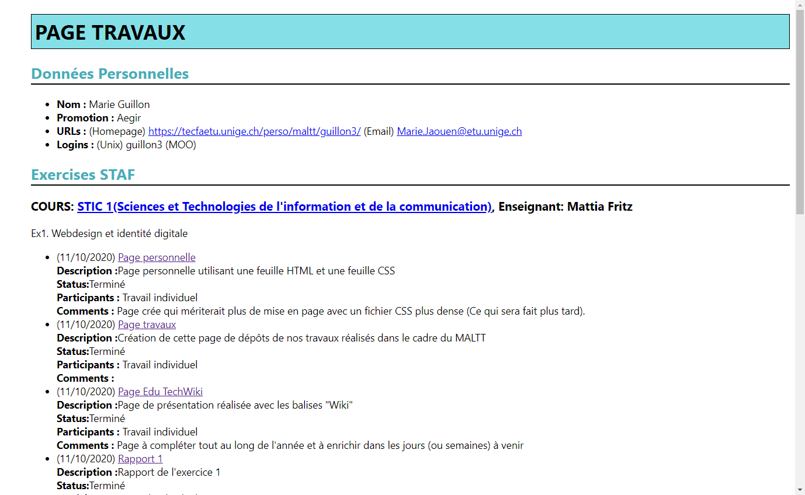

STIC I et STIC II
Domaine Sciences et Technologies de l'Information et de la Communication (STIC), cours obligatoires à 6 crédits ECTS.
Perspective du cours STIC I
Concevoir et développer des applications en HTML5, CSS et JavaScript qui sous-tendent des processus d'apprentissage.
Applications pour la lecture
Inhibition voie d'assemblage
Inhibition voie d'adressage
= interaction mais ≠ computation
Application triage des chiffres
= computation mais ≠ interaction
Open Education
Ressources théoriques, techniques et pratiques d'accompagnement sous licence creative commons.
Évaluation du cours
N = 11, intervalles de confiance à 95%. Tiré de Fritz, M. A., & Schneider, D. K. (2019). Pensée computationnelle avec JavaScript: Le cours STIC I. Atelier@EIAH’19. Apprentissage de la pensée informatique de la maternelle à l’Université : retours d’expériences et passage à l’échelle. EIAH’19, Paris, France.
Intégration domaines MALTT
Perspective du cours STIC II

XML
DTD
XSLT
XSD
IMS Content Package
SCORM
E-pub
Moodle
LAMS
Découverte et implémentation de formats et formalismes de la pédagogie numérique à différents niveaux de granularité.
Scénarisation intégrative
Workflow pédagogique
Intégration domaines MALTT
Organisation générale (I et II)
Pédagogie par 6 projets/livrables :
- Développer une application pédagogique avec contraintes techniques mais liberté sur le sujet
- Produire un rapport qui explique utilité et public cible
Plus participation à un environnement de co-construction de savoir (EduTechWiki), aussi plateforme pédagogique :
- Description STIC I (Aegir) et STIC II (Zelda)
- Exemple de page utilisée pour un cours/projet
E-portfolio étudiant-es
Espaces travaux des étudiant-es : Zelda, Aegir, toutes volées.